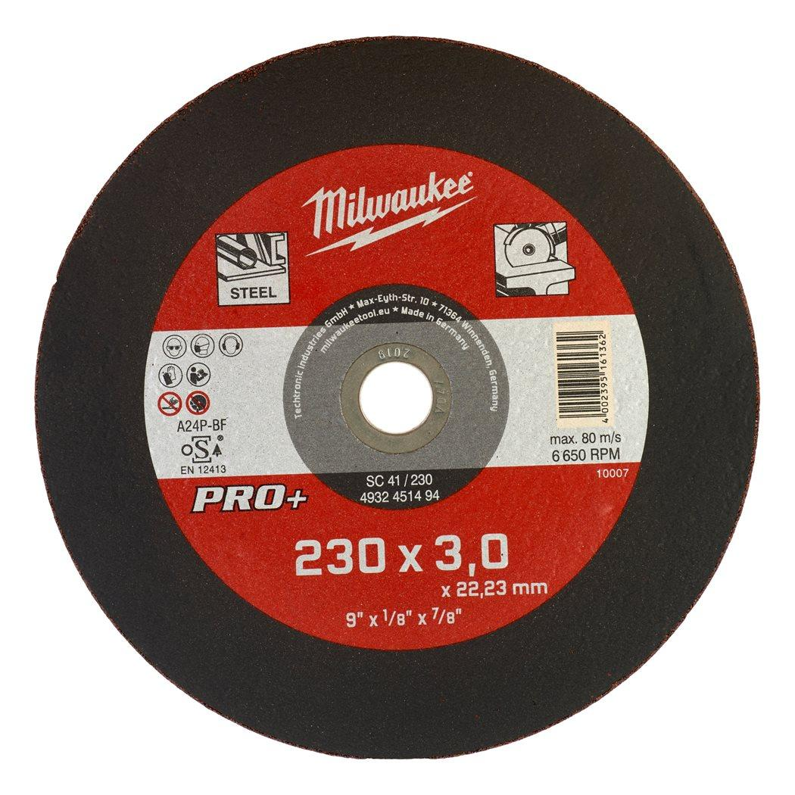
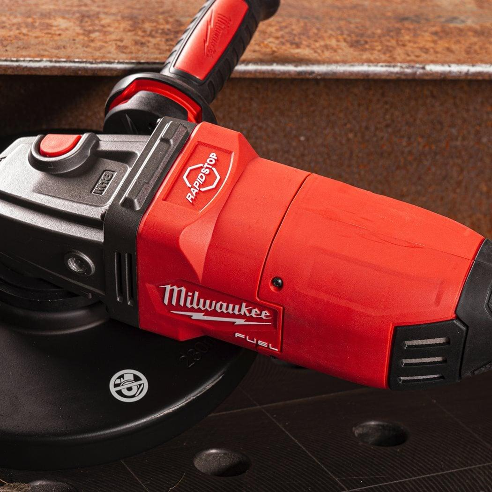

Milwaukee | METAL CUTTING DISC 230X3MM PRO+
4932451494





Features
- Applications: Great performance in cutting mild steel with medium strength, plain alloy tool steel, concrete reinforcing iron and steel rebar.
- Characteristics: Efficient cutting properties in combination with high performance.
Information
| Fits MILWAUKEE® | SC 41 / 230 |
| Bore size (mm) | 22.2 |
| Description | SC 41 / 230 |
| Disc diameter (mm) | 230 |
| Pack quantity | 1 |
| Thickness (mm) | 3 |